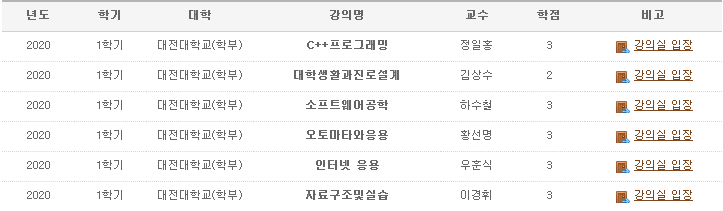

C++ 프로그래밍
객체지향언어인 C++의 개념을 이해하고 실습을 통하여 C++ 프로그래밍 기술을 익히는것을 목표로 합니다.대학생활과진로설계
건전한 대학생활을 유지할 수 있는 학습기술을 갖추는 법을 배웁니다.소프트웨어공학
소프트웨어 개발 계획 수립, 일정관리, 요구분석 등의 체계와 기법을 배웁니다.오토마타와응용
오토마타이론을 통해 자동상태기계의 동작원리를 이해하며, 오토마타응용 영역에 대한 적응력을 학습합니다.인터넷 응용
: HTML/CSS/JAVA 등 정적 및 동적 정보 제공을 위한 깁나 기술의 학습화 활용 능력을 갈고 닦습니다.자료구조및실습
프로그래밍을 통한 문제 해결 능력을 키웁니다. 영상작업, 소프트웨어 개발, 앱 개발 , 코딩쪽에 관심이 있어 앞으로는 그쪽 방면 전공 수업을 들으려고 합니다.